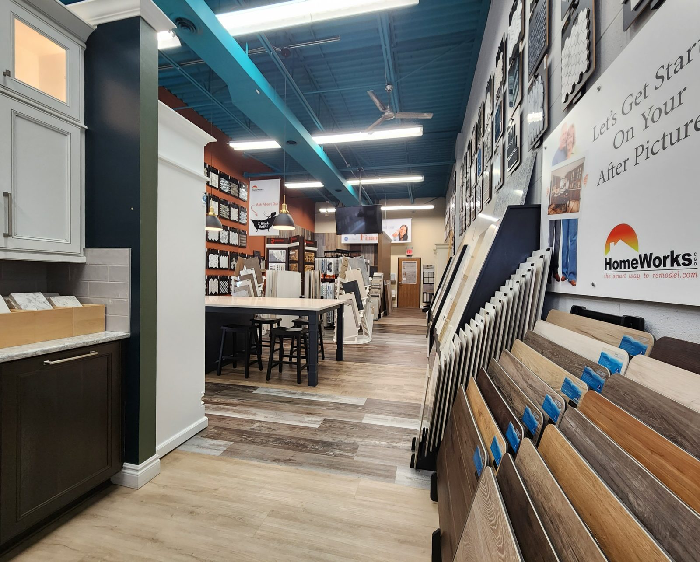
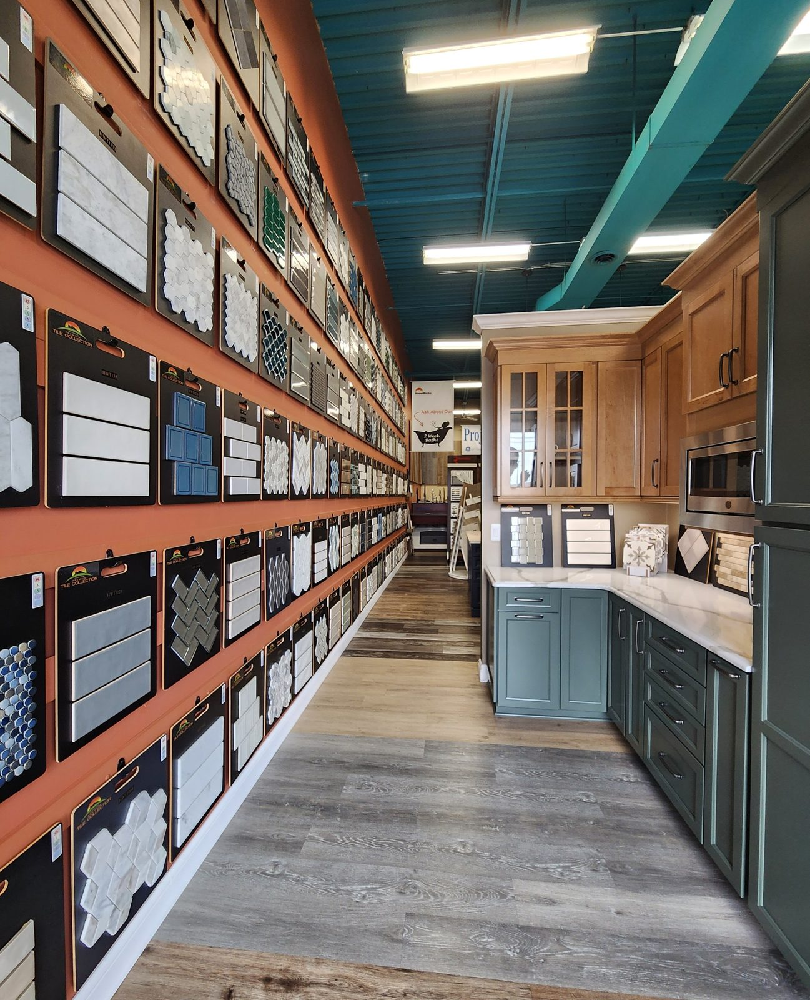
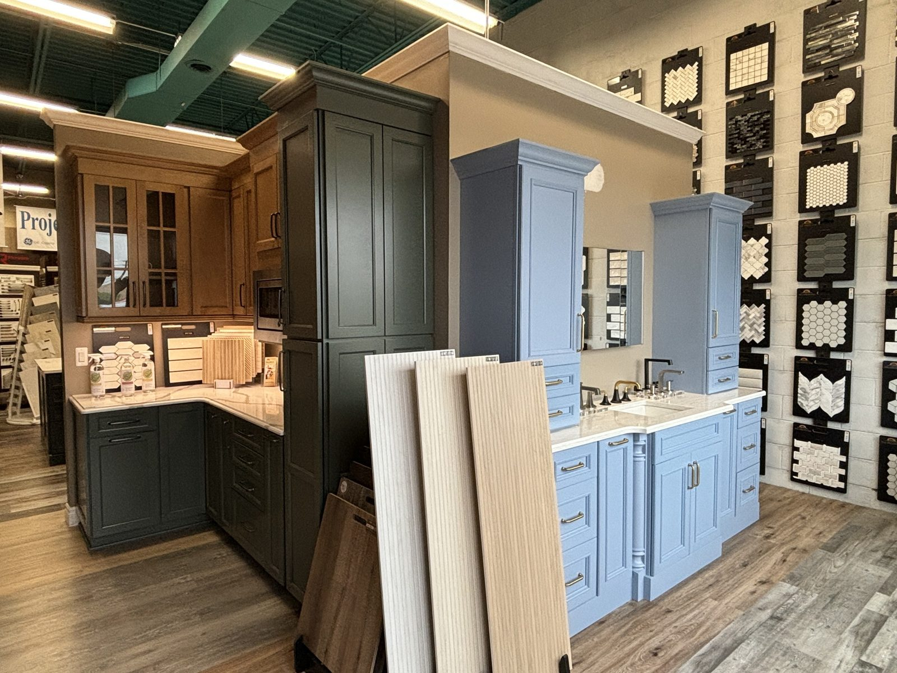
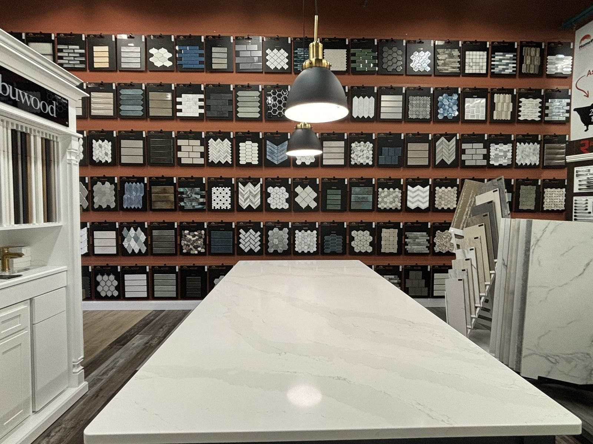

HOMEWORKS SHOWROOM · CHESTERFIELD TOWNSHIP, MI
Kitchen & bath showroom
in Chesterfield Township
See tile, cabinetry, quartz and fixtures in person at 49570 Gratiot Ave., then plan your kitchen or bathroom with a HomeWorks designer.

REMODELING IN CHESTERFIELD TOWNSHIP
Visit our Chesterfield showroom
Our showroom is at 49570 Gratiot Ave., Chesterfield, Michigan 48051, open Monday through Friday, 9am to 5pm, and Saturday, 9am to 3pm. It is where every HomeWorks design meeting happens: you sit with your designer, review your layouts and 3D renderings, and choose from tile, cabinet doors and quartz on display. HomeWorks CGO Inc. has worked from Chesterfield since 2001. Call 888-324-0660 to plan a visit.
INSIDE THE SHOWROOM
See it, touch it,
then decide.
More than 1,600 tile styles, 150+ cabinet doors and 65+ quartz colors under one roof, with a designer to help you narrow them down.




DESIGN, SELECT, BUILD
One team through the details.
Our employees do the remodeling work, with design and material selections planned before construction.
- 01
Discuss your space
Tell us what works, what does not, and how you use your kitchen or bathroom.
- 02
See materials in person
Compare finishes at our Chesterfield showroom with help from the HomeWorks team.
- 03
Review the quote and build
Walk through a detailed proposal before our employees begin the work.
WHAT WE BUILD
Kitchens and bathrooms
in Chesterfield Township.
PLAN YOUR PROJECT
Showroom
questions.
Planning a visit to 49570 Gratiot Ave.? Start here.
What happens at a design meeting in the showroom?
Your designer brings layout options with 3D renderings of your room and narrows the finishes to three or four options at a time, so you compare a few good choices instead of hundreds. You see the tile, cabinet doors and quartz side by side at the design table before your detailed quote is written.
Do I need an appointment to visit?
Call 888-324-0660 before you come, so a designer can be ready to walk you through tile, cabinetry and counters.
What is on display at the Chesterfield showroom?
More than 1,600 tile styles, 150+ cabinet doors including Fabuwood cabinetry, 65+ quartz colors, and displays of vanities, faucets and fixtures.
Do you remodel homes in Chesterfield Township?
Yes. Chesterfield Township is home to our showroom and part of our core service area, along with Macomb Township, Shelby Township, New Baltimore and St. Clair Shores.
BEFORE YOU REMODEL
Ideas to bring to the showroom
REMODELING IN CHESTERFIELD TOWNSHIP
Come see it in person.
Schedule your free in-home measureCall 888-324-0660 to plan your showroom visit and meet a designer.
Showroom: 49570 Gratiot Ave., Chesterfield · Warehouse and field operations: 51445 Industrial Dr, Macomb